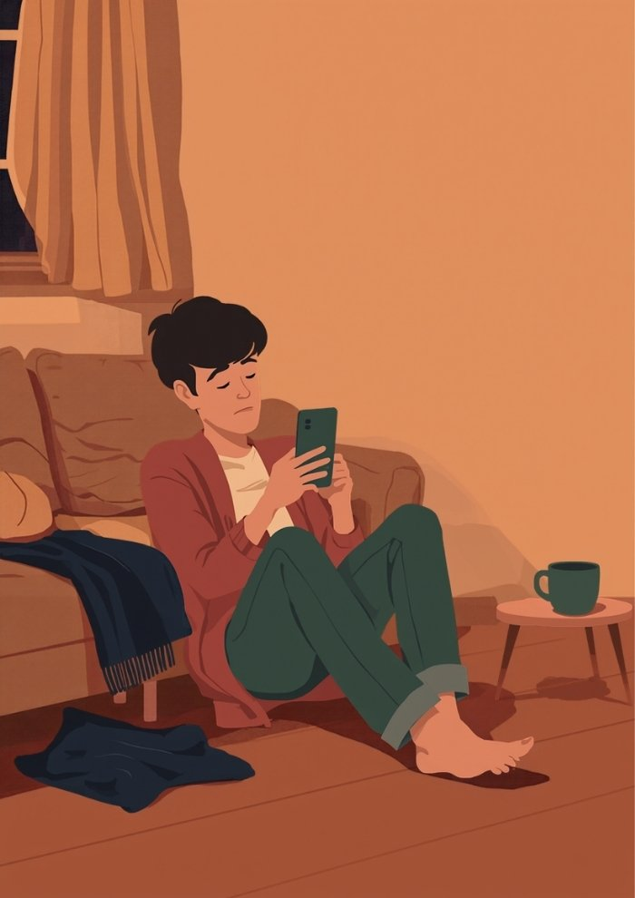
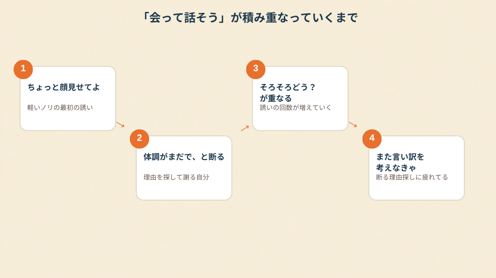
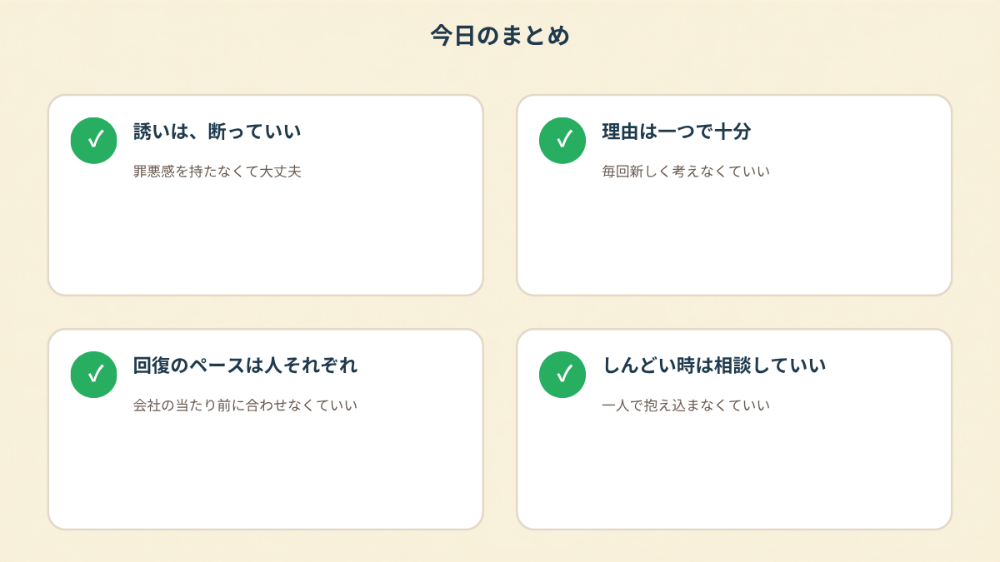

休職に入ってしばらくすると、「元気にしてる?ちょっと会おうよ」という連絡がぽつぽつ届くようになりました。悪意なんてまったくない、むしろ気にかけてくれているんだとわかっているのに、そのたびに胸のあたりがぎゅっと重くなる。この記事では、休職中に人と会う誘いをどう受け止めればいいのか迷っていた時期のことを、当時の感覚に近いところで書いてみます（2026年9月時点の情報です）。
PR



通知が来るたびに、返信する前にまず身構えてしまう
「ちょっと顔見せてよ」、最初は軽かった誘い

休職に入った直後は連絡が落ち着いていても、1ヶ月、2ヶ月と経つうちに「そろそろ大丈夫かな」という空気で誘いが増えることがあります。まめざる
休職して3週間くらい経った頃、同じ部署だった先輩から「元気にしてる? 近くまで来たら顔見せてよ」とメッセージが来ました。本当に軽いノリだったと思います。スタンプ付きで、深刻さのかけらもない文面でした。だから私も「落ち着いたら連絡しますね」と、当たり障りのない返事を送りました。あの時点では、それで終わる話のつもりでした。
でも1ヶ月後、また同じ先輩から連絡が来ました。今度は「体調どう? 無理しない範囲でお茶でもどう」という、少し踏み込んだ内容でした。悪意がないのはわかっているのに、画面を見た瞬間、胃のあたりがきゅっと縮む感覚がありました。会いたくないわけじゃない、でも今の自分を見せるのが怖い、というのが一番近い感覚だったと思います。
!
ここで書いていることは、休職や誘いに関する私個人の受け止め方であり、複数の場面を組み合わせて書いている部分もあります。感じ方には個人差があるため、当てはまらない場合ももちろんあります。
断るたびに「次は何て言おう」と考えている自分
最初のうちは「今日は通院があって」「まだ人混みが苦手で」など、その都度理由らしきものを考えて送っていました。でも3回目、4回目になると、さすがにネタが尽きてきます。同じ理由を繰り返すのも変な気がして、スマホのメモアプリに「使った言い訳リスト」を作っていたことに気づいたとき、さすがに自分でも笑ってしまいました。断ること自体より、断り方を考えることの方が疲れるという状態になっていたんだと思います。
「元同僚のグループLINEから個別に『みんな心配してるから、一回顔見せに来なよ』って来たときが一番しんどかったです。正直言うと、その『みんな』が誰と誰を指してるのかも分からないし、断ったら心配してくれてる人たちを裏切るみたいな気がして、結局既読スルーしたまま3日くらい悩みました。結局『まだ人に会う元気が出なくて』って正直に送ったら、あっさり『了解、ゆっくりね』の一言で終わったんですけど、あの3日間は本当に無駄に消耗しました。」
30代・女性（適応障害・事務職）
いま振り返ると、あのメモアプリのリストは、相手を納得させるためというより、自分自身を納得させるために作っていたものだったのかもしれません。理由が正当かどうかを、誰よりも自分が一番疑っていたんだと思います。
誘いが重なるほど、相手のペースに合わせそうになる
会社の「普通」と自分のペースは、そもそも別物
休職期間が2ヶ月を過ぎたあたりから、誘いの頻度と内容が少しずつ変わってきました。「そろそろ落ち着いた?」という聞き方が増え、上司からも「近況だけでも聞かせてほしい」という連絡が来るようになりました。相手にしてみれば、心配と業務上の気がかりが半分ずつくらいの感覚だったんだと思います。でも受け取る側の私は、その回数が増えるたびに「もう会わないといけない時期なんだ」と、なぜか自分で期限を作ってしまっていました。
「直属の上司から『カフェでいいから30分だけ』って言われたとき、業務命令じゃないのは分かってるのに、断ったら評価に響くんじゃないかって考えちゃって、結局行きました。行ったら行ったで、世間話のつもりが『いつ頃戻れそう?』って聞かれて、答えられない自分にまた落ち込んで。帰り道、なんで断らなかったんだろうってずっと考えてました。」
20代・男性（うつ状態・営業職）
i
自分が今どんな状態なのか、うまく言葉にできないときは、簡単な質問に答えるだけで今の気持ちを整理できる「気持ちスキャン診断」というツールも用意しています。よかったら覗いてみてください（
/shindan）。

誘いが重なるほど、断る理由を探すことそのものに消耗していく
相談の一コマ
相談者
また「会おうよ」って連絡来て…正直しんどいのに、もう断る理由が思いつかなくて。
まめざる
理由を探すこと自体、もうかなり疲れることですよね。何が一番しんどいですか。断ることそのものか、それとも断ったあとどう思われるか。
相談者
多分、どう思われるかの方です。仮病だと思われてないかなとか、ずっと考えちゃって。
まめざる
その「どう思われるか」を、休職中もずっと背負い続けるのは、しんどいですね。理由は一つで十分、と思える日が来るといいなと思います。
理由を探すのをやめてみたら、少し楽になった
結局、私が楽になったきっかけは、大した工夫でもなんでもなくて、「今は人と会うのがまだ難しい時期で」という一つの言い方だけを使い回すことにしただけでした。理由の中身を毎回変える必要はなかったし、相手を完全に納得させる必要もなかったんだと、今なら思えます。会社の「そろそろ普通に戻るだろう」というペースと、自分の回復のペースは、そもそも別のものさしで動いているんだと気づけたのは、だいぶ後になってからでした。
誘いへの向き合い方や、休職中に感じるつらさの現れ方には個人差があります。ここで書いた内容がそのまま当てはまらない場合もあるため、体調や気持ちの面で不安が続くときは、主治医など専門家に相談することをお勧めします（2026年9月時点の情報です）。

断る理由を毎回探さなくていい、というだけで少し楽になることがある
Q. 休職中に同僚や上司から「会おう」と誘われたら、必ず応じないといけませんか？
応じる義務があるわけではないとされています。体調や気持ちの状態に応じて、断ってもよい場面は十分にあります。ただし業務上必要な連絡かどうかは会社によって異なるため、判断に迷う場合は就業規則や担当者に確認しておくと安心です（2026年9月時点の情報です）。
Q. 誘いを断るたびに理由を考えるのが苦痛です。どうすればいいですか？
毎回違う理由を用意しなくても、「今は人と会うのがまだ難しい時期で」というような一つの言い方を決めておく方法もあるとされています。理由の正しさを証明する必要はなく、今の状態を簡潔に伝えるだけで十分な場合が多いようです。
Q. 気まずくなるのが心配で、結局会ってしまいます。どう考えればいいですか？
気まずさを避けたい気持ちは自然なものです。ただ回復のペースは人それぞれ異なるとされており、無理に会うことで体調に影響が出るケースもあるようです。負担が大きいと感じる場合は、一度立ち止まって考える時間を持つことも選択肢の一つです。
Q. 休職中、誰にも相談できずにしんどさを抱えています。どうしたらいいですか？
一人で抱え込まず、主治医や職場の産業医、外部の相談窓口などに気持ちを話してみることをお勧めします。mimemimeでも、休職中の悩みについて一緒に整理していくご相談を受け付けています。
PR


まずは無料で相談してみる
一人で抱え込まず、一緒に整理していきましょう。
無料相談はこちら
この記事に、聞いてみたいことはありますか？
「自分の場合はどうなんだろう」と思ったことを、気軽に書いてみてください。いただいた質問は個別にお返事したうえで、匿名で記事にすることがあります。
お
おのざる
mimemime代表。就労支援の現場経験をもとに、障がいのある方の働く不安に寄り添う記事を執筆。